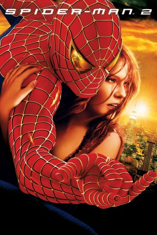

#698 Spider-Man 2
Auszeichnungen: 1 Oscars gewonnen für 2 Oscars nominiert
 
 IMDB-Wertung: 7.3 / 10
IMDB-Wertung: 7.3 / 10  Metascore: 83
Metascore: 83 
Zwei Jahre sind inzwischen vergangen, als Peter Parker von einer genmutierten Spinne gebissen wurde und sein Leben sich radikal verändert hat. Bei der Verbrechensbekämpferei lässt er sein College-Studium schleifen und verspätet sich permanent bei seinen beiden Jobs. Zu allem Überfluss muss Peter mit ansehen, wie Mary Jane im Gegensatz zu ihm ihr Leben meistert. Nun allerdings streckt ein neuer Bösewicht namens Dr. Octavius seine metallischen Tentakel nach der Zivilisation aus. Mit ihm ist nicht zu spaßen..
Jahr: 2004
Dauer: 127 Minuten
FSK: 12
Land: USA Studio: Columbia PicturesTonspuren: DD5.1 - ,
Untertitel: Deutsch, Englisch,
Auflösung: 1080p (1920x800) Größe: 14028 MB
Genre: Action, Sci-Fi, Abenteuer
Regisseur:  Sam Raimi
Sam Raimi
Drehbuch: Stan Lee, Steve Ditko, Alfred Gough, Miles Millar, Michael Chabon
Soundtrack: Danny Elfman
Darsteller:
Datei: X:\Comic-Filme\Spider-Man\Spider-Man 2 (2004, FSK12, 1920x800).mkv seit 16.03.2015
Festplatte: Comicverfilmungen+MusikCD
 Es gibt insgesamt 14 Filme in der Gruppe 'Comic-Filme\Spider-Man'
Es gibt insgesamt 14 Filme in der Gruppe 'Comic-Filme\Spider-Man'